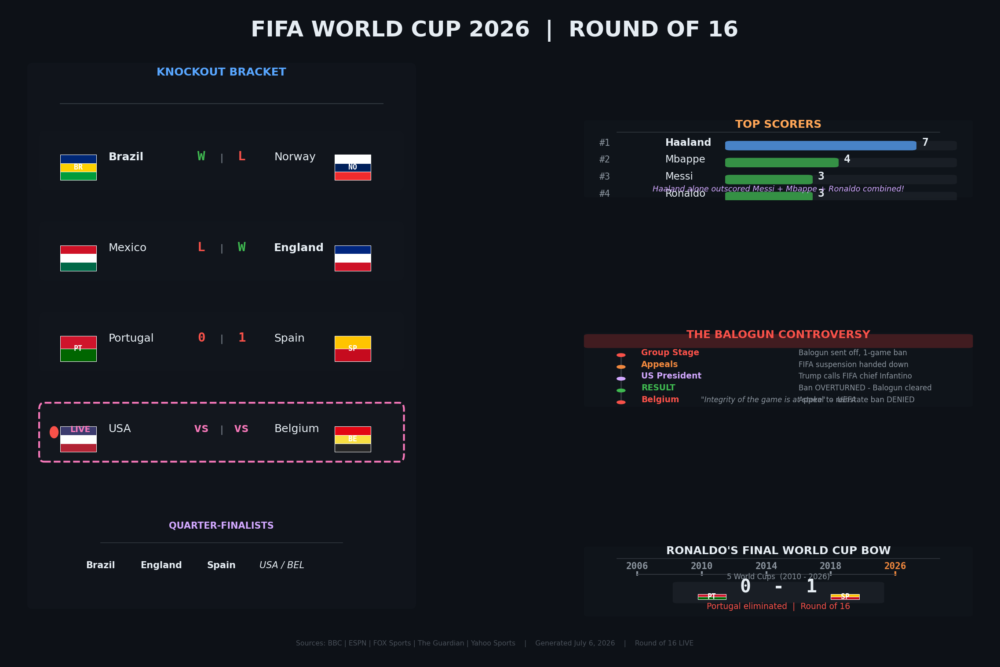

Round of 16 — July 6, 2026

Haaland alone outscored Messi + Mbappé + Ronaldo combined.
Folarin Balogun sent off — FIFA hands 1-game suspension
US President Trump calls FIFA president Infantino to lobby for the ban to be reviewed
FIFA reverses the suspension — Balogun cleared to play vs Belgium
Belgium's appeal to reinstate the ban is rejected by FIFA
"The integrity of the game is at stake" — UEFA
Cristiano Ronaldo · 5 World Cups
Eliminated · Round of 16 · A tearful final bow